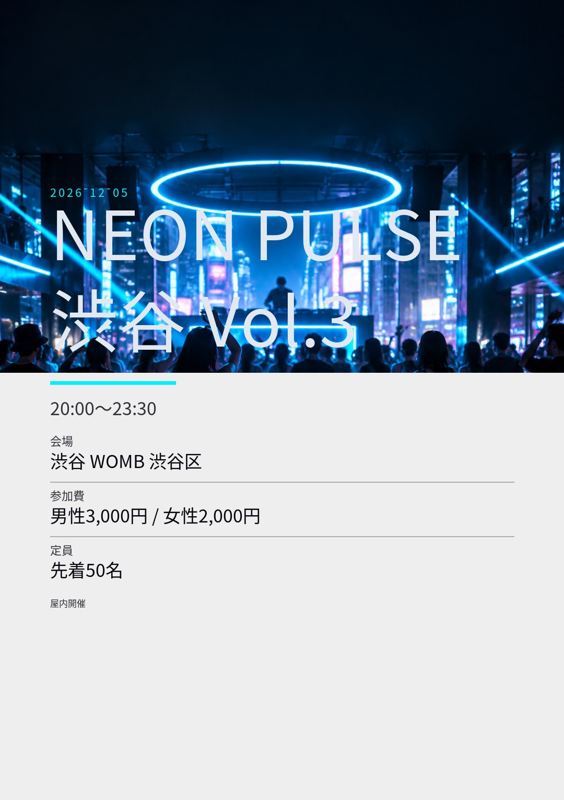
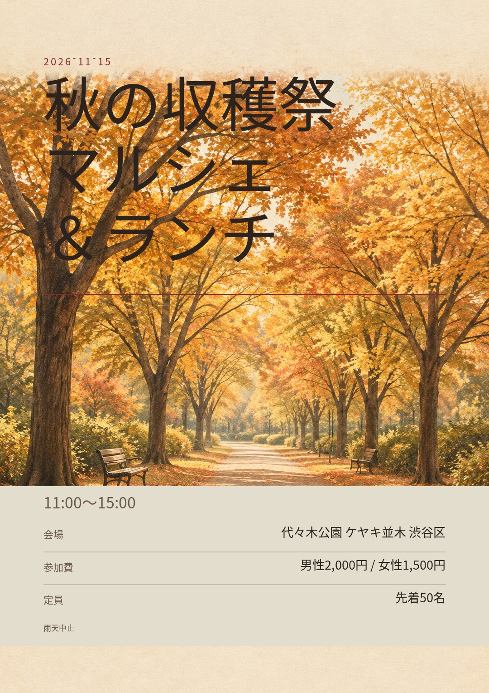
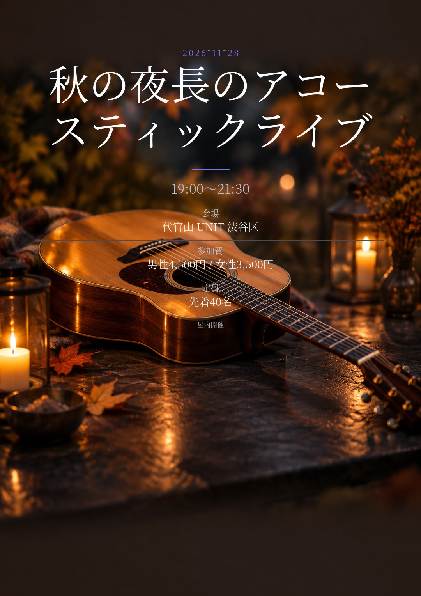

NEON PULSE 渋谷 Vol.3
公開中主催参加 0名 / 定員 50名回答 0名 ・ 不参加 0名
共有と設定
一時停止すると、告知ページは残したまま出欠だけを止めます。削除すると元に戻せません。
月8回プランに加入中。今月は残り 1 回です。
公開中
8件
受付停止
1件

一時停止すると、告知ページは残したまま出欠だけを止めます。削除すると元に戻せません。

一時停止すると、告知ページは残したまま出欠だけを止めます。削除すると元に戻せません。

一時停止すると、告知ページは残したまま出欠だけを止めます。削除すると元に戻せません。

一時停止すると、告知ページは残したまま出欠だけを止めます。削除すると元に戻せません。
一時停止すると、告知ページは残したまま出欠だけを止めます。削除すると元に戻せません。
一時停止すると、告知ページは残したまま出欠だけを止めます。削除すると元に戻せません。
いま出欠を受け付けていません。公開を再開すると、また回答を受け付けます。
一時停止すると、告知ページは残したまま出欠だけを止めます。削除すると元に戻せません。

一時停止すると、告知ページは残したまま出欠だけを止めます。削除すると元に戻せません。
9件中 1〜9件